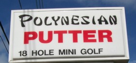
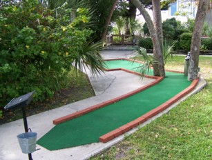

| A:
Polynesian Putter 50th Ave. & Gulf Blvd, St. Pete Beach
(727) 360-9678
 | 
| Price: $5.00 Number of Courses: 1 Upkeep: B Originality: C Hole-in-One Difficulty: Medium Par Difficulty: Easy Music: None
Polynesian Putter is an old course a block away from the beach. Some of their greens and paper mache props are falling apart, but it's still an okay course for the price. Some of their holes are easy, and some far too difficult, but all require thought and a steady hand. |